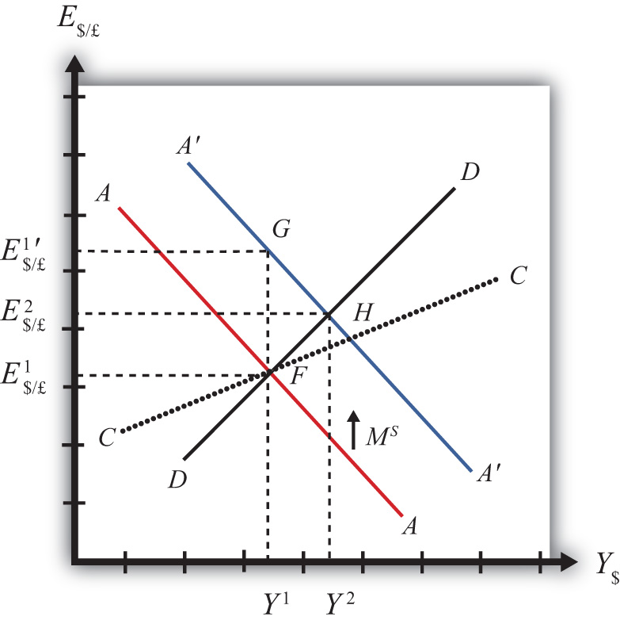
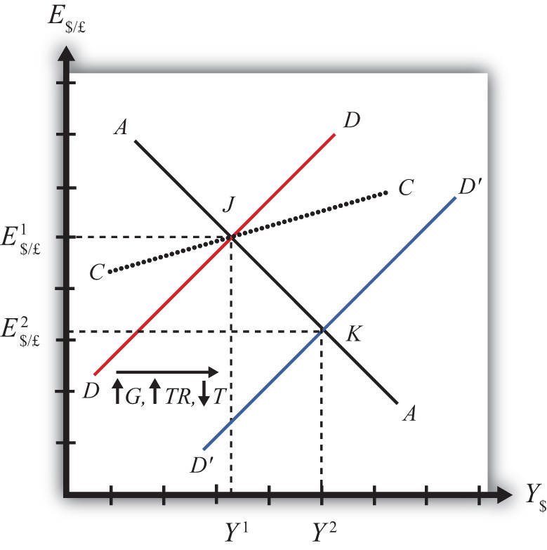
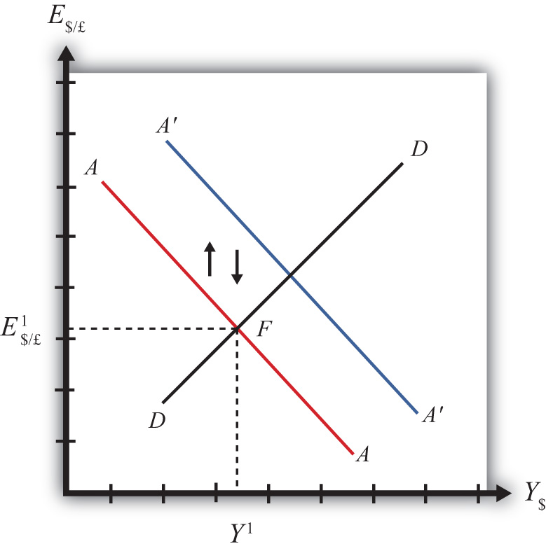

The effects of government policies on key macroeconomic variables are an important issue in international finance. The AA-DD model constructed in Chapter 20 "The AA-DD Model" is used in this chapter to analyze the effects of fiscal and monetary policy under a regime of floating exchange rates. The results are more comprehensive than the previous analyses of the same policies because they take into account all the between-market effects across the money market, the foreign exchange (Forex) market, and the goods and services (G&S) market.
This chapter uses the AA-DD model to describe the effects of fiscal and monetary policy under a system of floating exchange rates. Fiscal and monetary policies are the primary tools governments use to guide the macroeconomy. In introductory macroeconomics courses, students learn how fiscal and monetary policy levers can be used to influence the level of gross national product (GNP), the inflation rate, the unemployment rate, and interest rates. In this chapter, that analysis is expanded to an open economy (i.e., one open to trade) and to the effects on exchange rates and current account balances.
Using the AA-DD model, several important relationships between key economic variables are shown:
The AA-DD model was developed to describe the interrelationships of macroeconomic variables within an open economy. Since some of these macroeconomic variables are controlled by the government, we can use the model to understand the likely effects of government policy changes. The two main levers the government controls are monetary policy (changes in the money supply) and fiscal policy (changes in the government budget). In this chapter, the AA-DD model is applied to understand government policy effects in the context of a floating exchange rate system. In Chapter 23 "Policy Effects with Fixed Exchange Rates", we’ll revisit these same government policies in the context of a fixed exchange rate system.
It is important to recognize that these results are what “would” happen under the full set of assumptions that describe the AA-DD model. These effects may or may not happen in reality. Despite this problem, the model surely captures some of the simple cause-and-effect relationships and therefore helps us to understand the broader implications of policy changes. Thus even if in reality many more elements not described in the model may act to influence the key endogenous variables, the AA-DD model at least gives a more complete picture of some of the expected tendencies.
Jeopardy Questions. As in the popular television game show, you are given an answer to a question and you must respond with the question. For example, if the answer is “a tax on imports,” then the correct question is “What is a tariff?”
In this section, we use the AA-DD model to assess the effects of monetary policy in a floating exchange rate system. Recall from Chapter 18 "Interest Rate Determination" that the money supply is effectively controlled by a country’s central bank. In the case of the United States, this is the Federal Reserve Board, or the Fed for short. When the money supply increases due to action taken by the central bank, we refer to it as expansionary monetary policy. If the central bank acts to reduce the money supply, it is referred to as contractionary monetary policy. Methods that can be used to change the money supply are discussed in Chapter 18 "Interest Rate Determination", Section 18.5 "Controlling the Money Supply".
Suppose the economy is originally at a superequilibrium shown as point F in Figure 21.1 "Expansionary Monetary Policy in the AA-DD Model with Floating Exchange Rates". The original GNP level is Y1 and the exchange rate is E$/£1. Next, suppose the U.S. central bank (or the Fed) decides to expand the money supply. As shown in Chapter 20 "The AA-DD Model", Section 20.5 "Shifting the AA Curve", money supply changes cause a shift in the AA curve. More specifically, an increase in the money supply will cause AA to shift upward (i.e., ↑MS is an AA up-shifter). This is depicted in the diagram as a shift from the red AA to the blue A′A′ line.
Figure 21.1 Expansionary Monetary Policy in the AA-DD Model with Floating Exchange Rates
There are several different levels of detail that can be provided to describe the effects of this policy. Below, we present three descriptions with increasing degrees of completeness. First the quick result, then the quick result with the transition process described, and finally the complete adjustment story.
The increase in AA causes a shift in the superequilibrium point from F to H. In adjusting to the new equilibrium at H, GNP rises from Y1 to Y2 and the exchange rate increases from E$/£1 to E$/£2. The increase in the exchange rate represents an increase in the British pound value and a decrease in the U.S. dollar value. In other words, it is an appreciation of the pound and a depreciation of the dollar. Since the final equilibrium point H is above the initial iso-CAB line CC, the current account balance increases. (See Chapter 20 "The AA-DD Model", Section 20.8 "AA-DD and the Current Account Balance" for a description of CC.) If the CAB were in surplus at F, then the surplus increases; if the CAB were in deficit, then the deficit falls. Thus U.S. expansionary monetary policy causes an increase in GNP, a depreciation of the U.S. dollar, and an increase in the current account balance in a floating exchange rate system according to the AA-DD model.
Consider the upward shift of the AA curve due to the increase in the money supply. Since exchange rates adjust much more rapidly than GNP, the economy will initially adjust back to the new A′A′ curve before any change in GNP occurs. That means the first adjustment will be from point F to point G directly above. The exchange rate will increase from E$/£1 to E$/£1′, representing a depreciation of the U.S. dollar.
Now at point G, the economy lies to the left of the DD curve. Thus GNP will begin to rise to get back to goods and services (G&S) market equilibrium on the DD curve. However, as GNP rises, the economy moves to the right above the A′A′ curve, which forces a downward readjustment of the exchange rate to get back to A′A′. In the end, the economy will adjust in a stepwise fashion from point G to point H, with each rightward movement in GNP followed by a quick reduction in the exchange rate to remain on the A′A′ curve. This process will continue until the economy reaches the superequilibrium at point H.
Notice that in the transition the exchange rate first rises to E$/£1′. Above the rate it will ultimately reach E$/£2 before settling back to superequilibrium value. This is an example of exchange rate overshooting. In the transition, the exchange rate overshoots its ultimate long-run value.
Exchange rate overshootingOccurs when an exchange rate, in the process of adjusting to a new equilibrium, either rises above the final equilibrium value before falling back again, or falls below the final equilibrium value before rising up again. is used as one explanation for the volatility of exchange rates in floating markets. If many small changes occur frequently in an economy, the economy may always be in transition moving to a superequilibrium. Because of the more rapid adjustment of exchange rates, it is possible that many episodes of overshooting—both upward and downward—can occur in a relatively short period.
Step 1: When the money supply increases, real money supply will exceed real money demand in the economy. Since households and businesses hold more money than they would like, at current interest rates, they begin to convert liquid money assets into less-liquid nonmoney assets. This raises the supply of long-term deposits and the amount of funds available for banks to loan. More money to lend will lower average U.S. interest rates, which in turn will result in a lower U.S. rate of return in the Forex market. Since RoR$ < ROR£ now, there will be an immediate increase in the demand for foreign British currency, thus causing an appreciation of the pound and a depreciation of the U.S. dollar. Thus the exchange rate (E$/£) rises. This change is represented by the movement from point F to G on the AA-DD diagram. The AA curve has shifted up to reflect the new set of asset market equilbria corresponding to the higher U.S. money supply. Since the money market and foreign exchange (Forex) markets adjust very swiftly to the money supply change, the economy will not remain off the new A′A′ curve for very long.
Step 2: Now that the exchange rate has risen to E$/£1′, the real exchange has also increased. This implies foreign goods and services are relatively more expensive while U.S. G&S are relatively cheaper. This will raise demand for U.S. exports, curtail demand for U.S. imports, and result in an increase in current account and, thereby, aggregate demand. Because aggregate demand exceeds aggregate supply, inventories will begin to fall, stimulating an increase in production and thus GNP. This is represented by a rightward shift from point G.
Step 3: As GNP rises, so does real money demand, causing an increase in U.S. interest rates. With higher interest rates, the rate of return on U.S. assets rises above that in the United Kingdom, and international investors shift funds back to the United States, resulting in a dollar appreciation (pound depreciation)—that is, a decrease in the exchange rate (E$/£). This moves the economy downward, back to the A′A′ curve. The adjustment in the asset market will occur quickly after the change in interest rates. Thus the rightward shift from point G in the diagram results in quick downward adjustment to regain equilibrium in the asset market on the A′A′ curve, as shown in the figure.
Step 4: Continuing increases in GNP caused by excess aggregate demand, results in continuing increases in U.S. interest rates and rates of return, repeating the stepwise process above until the new equilibrium is reached at point H in the diagram.
Step 5: The equilibrium at H lies to the northeast of F along the original DD curve. As shown in Chapter 20 "The AA-DD Model", Section 20.8 "AA-DD and the Current Account Balance", the equilibrium at H lies above the original iso-CAB line. Therefore, the current account balance will rise.
Contractionary monetary policy corresponds to a decrease in the money supply. In the AA-DD model, a decrease in the money supply shifts the AA curve downward. The effects will be the opposite of those described above for expansionary monetary policy. A complete description is left for the reader as an exercise.
The quick effects, however, are as follows. U.S. contractionary monetary policy will cause a reduction in GNP and a reduction in the exchange rate, E$/£, implying an appreciation of the U.S. dollar and a decrease in the current account balance.
Use the AA-DD model (not necessarily the diagram) to explain the sequential short-run adjustment process of an increase in the money supply on the following economic variables under floating exchange rates. (In other words, first answer how the money supply increase immediately affects the interest rate. Next, answer how the previous economic variable—i.e., the interest rate—affects the nominal exchange rate. Continue this process through investment.)
In this section, we use the AA-DD model to assess the effects of fiscal policy in a floating exchange rate system. Recall that fiscal policy refers to any change in expenditures or revenues within any branch of the government. This means any change in government spending—transfer payments, or taxes, by either federal, state, or local governments—represents a fiscal policy change. Since changes in expenditures or revenues will often affect a government budget balance, we can also say that a change in the government surplus or deficit represents a change in fiscal policy.
When government spending or transfer payments increase, or tax revenues decrease, we refer to it as expansionary fiscal policy. These actions would also be associated with an increase in the government budget deficit or a decrease in its budget surplus. If the government acts to reduce government spending or transfer payments, or increase tax revenues, it is referred to as contractionary fiscal policy. These actions would also be associated with a decrease in the government budget deficit, or an increase in its budget surplus.
Suppose the economy is originally at a superequilibrium shown as point J in Figure 21.2 "Expansionary Fiscal Policy in the AA-DD Model with Floating Exchange Rates". The original gross national product (GNP) level is Y1 and the exchange rate is E$/£1. Next, suppose the government decides to increase government spending (or increase transfer payments or decrease taxes). As shown in Chapter 20 "The AA-DD Model", Section 20.3 "Shifting the DD Curve", fiscal policy changes cause a shift in the DD curve. More specifically, an increase in government spending (or an increase in transfer payments or a decrease in taxes) will cause DD to shift rightward (i.e., ↑G, ↑TR, and ↓T all are DD right-shifters). This is depicted in the diagram as a shift from the red DD to the blue D′D′ line.
Figure 21.2 Expansionary Fiscal Policy in the AA-DD Model with Floating Exchange Rates
There are several different levels of detail that can be provided to describe the effects of this policy. Below, we present three descriptions with increasing degrees of completeness: first the quick result, then the quick result with the transition process described, and finally the complete adjustment story.
The increase in DD causes a shift in the superequilibrium point from J to K. In adjusting to the new equilibrium at K, GNP rises from Y1 to Y2 and the exchange rate decreases from E$/£1 to E$/£2. The decrease in the exchange represents a decrease in the British pound value and an increase in the U.S. dollar value. In other words, it is a depreciation of the pound and an appreciation of the dollar. Since the final equilibrium point K is below the initial iso-CAB line CC, the current account balance decreases. (Caveat: this will be true for all fiscal expansions, but the iso-CAB line can only be used with an increase in G; see Chapter 20 "The AA-DD Model", Section 20.8 "AA-DD and the Current Account Balance" for an explanation.) If the CAB were in surplus at J, then the surplus decreases; if the CAB were in deficit, then the deficit rises. Thus the U.S. expansionary fiscal policy causes an increase in the U.S. GNP, an appreciation of the U.S. dollar, and a decrease in the current account balance in a floating exchange rate system according to the AA-DD model.
If the expansionary fiscal policy occurs because of an increase in government spending, then government demand for goods and services (G&S) will increase. If the expansionary fiscal policy occurs due to an increase in transfer payments or a decrease in taxes, then disposable income will increase, leading to an increase in consumption demand. In either case aggregate demand increases, and this causes the rightward shift in the DD curve. Immediately after aggregate demand increases, but before any adjustment has occurred at point J, the economy lies to the left of the new D´D´ curve. Thus GNP will begin to rise to get back to G&S market equilibrium on the D´D´ curve. However, as GNP rises, the economy will move above the AA curve, forcing a downward readjustment of the exchange rate to get back to asset market equilibrium on the AA curve. In the end, the economy will adjust in a stepwise fashion from point J to point K, with each rightward movement in GNP followed by a quick reduction in the exchange rate to remain on the AA curve. This process will continue until the economy reaches the superequilibrium at point K.
Step 1: If the expansionary fiscal policy occurs because of an increase in government spending, then government demand for G&S will increase. If the expansionary fiscal policy occurs due to an increase in transfer payments or a decrease in taxes, then disposable income will increase, leading to an increase in consumption demand. In either case aggregate demand increases. Before any adjustment occurs, the increase in aggregate demand implies aggregate demand exceeds aggregate supply, which will lead to a decline in inventories. To prevent this decline, retailers (or government suppliers) will signal firms to produce more. As supply increases so does the GNP, and the economy moves to the right of point J.
Step 2: As GNP rises, so does real money demand, causing an increase in U.S. interest rates. With higher interest rates, the rate of return on U.S. assets rises above that in the United Kingdom and international investors shift funds back to the United States, resulting in a dollar appreciation (pound depreciation)—that is, a decrease in the exchange rate E$/£. This moves the economy downward, back to the AA curve. The adjustment in the asset market will occur quickly after the change in interest rates. Thus the rightward shift from point J in the diagram results in quick downward adjustment to regain equilibrium in the asset market on the AA curve, as shown.
Step 3: Continuing increases in GNP caused by excess aggregate demand, results in continuing increases in U.S. interest rates and rates of return, repeating the stepwise process above until the new equilibrium is reached at point K in the diagram.
Step 4: The equilibrium at K lies to the southeast of J along the original AA curve. As shown in Chapter 20 "The AA-DD Model", Section 20.8 "AA-DD and the Current Account Balance", the current account balance must be lower at K since both an increase in GNP and a dollar appreciation cause decreases in current account demand. Thus the equilibrium at K lies below the original iso-CAB line. However, this is only assured if the fiscal expansion occurred due to an increase in G.
If transfer payments increased or taxes were reduced, these would both increase disposable income and lead to a further decline in the current account balance. Thus also with these types of fiscal expansions, the current account balance is reduced; however, one cannot use the iso-CAB line to show it.
Contractionary fiscal policy corresponds to a decrease in government spending, a decrease in transfer payments, or an increase in taxes. It would also be represented by a decrease in the government budget deficit or an increase in the budget surplus. In the AA-DD model, a contractionary fiscal policy shifts the DD curve leftward. The effects will be the opposite of those described above for expansionary fiscal policy. A complete description is left for the reader as an exercise.
The quick effects, however, are as follows. U.S. contractionary fiscal policy will cause a reduction in GNP and an increase in the exchange rate (E$/£), implying a depreciation of the U.S. dollar.
The United States maintains a floating exchange rate. In the past few years, its government budget deficit has risen to a very high level. At the same time, its trade deficit has also become much larger.
Suppose the government reduces government spending to reduce the budget deficit. Assume the U.S. economy can be described with the AA-DD model. In the adjustment to the new equilibrium, the following variables will be affected in the order listed. Indicate whether each variable rises (+) or falls (−) during the adjustment process.
| Indicate + or − | |
|---|---|
| Government Demand (G) | |
| Aggregate Demand (AD) | |
| Aggregate Supply (Y$) | |
| Real Money Demand (L[i$,Y$]) | |
| U.S. Interest Rates (i$) | |
| U.S. Rate of Return (RoR$) | |
| Exchange Rate (E$/£) | |
| Foreign Rate of Return (RoR£) | |
| Real Exchange Rate (q$/£) | |
| Current Account Demand (CAD) | |
| Aggregate Demand (AD) |
Once the final short-run equilibrium is reached, indicate the effect of the decrease in government spending on the following variables:
| Indicate + or − | |
|---|---|
| U.S. Government Budget Deficit | |
| U.S. Dollar Value | |
| U.S. Current Account Deficit | |
| U.S. GNP |
Consider the following actions/occurrences listed in the first column. For each one, use the AA-DD model to determine the impact on the variables from the twin-deficit identity listed along the top row. Consider the final equilibrium short-run effects. Use the following notation:
+ the variable increases
− the variable decreases
0 the variable does not change
A the variable change is ambiguous (i.e., it may rise, it may fall)
| Impact on | ||||
|---|---|---|---|---|
| Sp | I | IM − EX | G + TR − T | |
| a. A decrease in investment demand with floating ERs | ||||
| b. A decrease in investment demand floating ERs | ||||
| c. An increase in foreign interest rates under floating ERs | ||||
| d. An increase in government demand under floating ERs | ||||
If expansionary monetary policy occurs when the economy is operating at full employment output, then the money supply increase will eventually put upward pressure on prices. Thus we say that eventually, or in the long run, the aggregate price level will rise and the economy will experience an episode of inflation in the transition. See Chapter 18 "Interest Rate Determination", Section 18.14 "Money Supply and Long-Run Prices" for a complete description of this process.
Here, we will describe the long-run effects of an increase in the money supply using the AA-DD model. We break up the effects into short-run and long-run components. In the short run, the initial money supply effects are felt and investor anticipations about future effects are implemented. In the long run, we allow the price level to rise.
Suppose the economy is originally at a superequilibrium, shown as point F in Figure 21.3 "Expansionary Monetary Policy in the Long Run". The original GNP level is YF, and the exchange rate is E1. YF represents the full-employment level of output, which also implies that the natural rate of unemployment prevails. Any movement of the economy to the right of YF will cause an eventual increase in the aggregate price level. Any movement to the left of YF causes an eventual decrease in the price level.
Figure 21.3 Expansionary Monetary Policy in the Long Run

Next, suppose the U.S. central bank (or the Fed) decides to expand the money supply. As shown in Chapter 20 "The AA-DD Model", Section 20.5 "Shifting the AA Curve", money supply changes cause a shift in the AA curve. More specifically, an increase in the money supply will cause AA to shift upward (i.e., ↑MS is an AA up-shifter). This is depicted in the diagram as a shift from the AA line to the red A′A′ line.
In the long-run adjustment story, several different changes in exogenous variables will occur sequentially, thus it is difficult to describe the quick final result, so we will only describe the transition process in partial detail.
The increase in the money supply causes the first upward shift of the AA curve, shown as step 1 in the diagram. Since exchange rates adjust much more rapidly than gross national product (GNP), the economy will quickly adjust to the new A′A′ curve before any change in GNP occurs. That means the first adjustment will be from point F to point G directly above. The exchange rate will increase from E1 to E2, representing a depreciation of the U.S. dollar.
The second effect is caused by changes in investor expectations. Investors generally track important changes in the economy, including money supply changes, because these changes can have important implications for the returns on their investments. Investors who see an increase in money supply in an economy at full employment are likely to expect inflation to occur in the future. When investors expect future U.S. inflation, and when they consider both domestic and foreign investments, they will respond today with an increase in their expected future exchange rate (E$/£e). There are two reasons to expect this immediate effect:
The timing of the change in E$/£e will depend on how quickly investors recognize the money supply change, compute its likely effect, and incorporate it into their investment plans. Since investors are typically very quick to adapt to market changes, the expectations effect should take place in the short run, perhaps long before the inflation ever occurs. In some cases, the expectations change may even occur before the Fed increases the money supply, if investors anticipate the Fed’s action.
The increase in the expected exchange rate (this means a decrease in the expected future dollar value) causes a second upward shift of the AA curve, shown as step 2 in the diagram. Again, rapid exchange rate adjustment implies the economy will quickly adjust to the new A″A″ curve at point H directly above. The exchange rate will now increase from E2 to E3, representing a further depreciation of the U.S. dollar.
Once at point H, aggregate demand, which is on the DD curve to the right of H, exceeds aggregate supply, which is still at YF. Thus GNP will begin to rise to get back to G&S market equilibrium on the DD curve. However, as GNP rises, the economy moves above the A″A″ curve that forces a downward readjustment of the exchange rate to get back to asset market equilibrium on A″A″. In the end, the economy will adjust in a stepwise fashion from point H to point I, with each rightward movement in GNP followed by a quick reduction in the exchange rate to remain on the A″A″ curve. This process will continue until the economy reaches the temporary superequilibrium at point I.
The next effect occurs because GNP, now at Y2 at point I, has risen above the full employment level at YF. This causes an increase in U.S. prices, meaning that P$ (the U.S. price level) begins to rise. The increase in U.S. prices has two effects as shown in Figure 21.4 "Expansionary Monetary Policy in the Long Run, Continued". An increase in P$ is both a DD left-shifter and an AA down-shifter.
Figure 21.4 Expansionary Monetary Policy in the Long Run, Continued

In step 3, we depict a leftward shift of DD to D′D′. DD shifts left because higher U.S. prices will reduce the real exchange rate. This makes U.S. G&S relatively more expensive compared with foreign G&S, thus reducing export demand, increasing import demand, and thereby reducing aggregate demand.
In step 4, we depict a downward shift of A″A″ to A′″A′″. AA shifts down because a higher U.S. price level reduces real money supply. As the real money supply falls, U.S. interest rates rise, leading to an increase in the rate of return for U.S. assets as considered by international investors. This in turn raises the demand for U.S. dollars on the Forex, leading to a dollar appreciation. Since this effect occurs for any GNP level, the entire AA curve shifts downward.
Steps 3 and 4 will both occur simultaneously, and since both are affected by the increase in the price level, it is impossible to know which curve will shift faster or precisely how far each curve will shift. However, we do know two things. First, the AA and DD shifting will continue as long as GNP remains above the full employment level. Once GNP falls to YF, there is no longer upward pressure on the price level and the shifting will cease. Second, the final equilibrium exchange rate must lie above the original exchange rate. This occurs because output will revert back to its original level, the price level will be higher, and according to PPP, eventually the exchange rate will have to be higher as well.
The final equilibrium will be at a point like J, which lies to the left of I. In this transition, the exchange rate will occasionally rise when DD shifts left and will occasionally fall when AA shifts down. Thus the economy will wiggle its way up and down, from point I to J. Once at point J, there is no reason for prices to rise further and no reason for a change in investor expectations. The economy will have reached its long-run equilibrium.
Note that one cannot use the iso-CAB line to assess the long-run effect on the current account balance. In the final adjustment, although the final equilibrium lies above the original iso-CAB line, in the long run the P$ changes will raise the iso-CAB lines, making it impossible to use these to identify the final effect.
However, in adjusting to the long-run equilibrium, the only two variables affecting the current account that will ultimately change are the exchange rate and the price level. If these two rise proportionally to each other, as they would if purchasing power parity held, then there will be no long-run effect on the current account balance.
The final long-run effect of an increase in the U.S. money supply in a floating exchange rate system is a depreciation of the U.S. dollar and no change in real GNP. Along the way, GNP temporarily rises and unemployment falls below the natural rate. However, this spurs an increase in the price level, which reduces GNP to its full employment level and raises unemployment back to its natural rate. U.S. inflation occurs in the transition while the price level is increasing.
Jeopardy Questions. As in the popular television game show, you are given an answer to a question and you must respond with the question. For example, if the answer is “a tax on imports,” then the correct question is “What is a tariff?”
In a pure floating exchange rate system, the exchange rate is determined as the rate that equalizes private market demand for a currency with private market supply. The central bank has no necessary role to play in the determination of a pure floating exchange rate. Nonetheless, sometimes central banks desire or are pressured by external groups to take actions (i.e., intervene) to either raise or lower the exchange rate in a floating exchange system. When central banks do intervene on a semiregular basis, the system is sometimes referred to as a “dirty float.” There are several reasons such interventions occur.
The first reason central banks intervene is to stabilize fluctuations in the exchange rate. International trade and investment decisions are much more difficult to make if the exchange rate value is changing rapidly. Whether a trade deal or international investment is good or bad often depends on the value of the exchange rate that will prevail at some point in the future. (See Chapter 15 "Foreign Exchange Markets and Rates of Return", Section 15.3 "Calculating Rate of Returns on International Investments" for a discussion of how future exchange rates affect returns on international investments.) If the exchange rate changes rapidly, up or down, traders and investors will become more uncertain about the profitability of trades and investments and will likely reduce their international activities. As a consequence, international traders and investors tend to prefer more stable exchange rates and will often pressure governments and central banks to intervene in the foreign exchange (Forex) market whenever the exchange rate changes too rapidly.
The second reason central banks intervene is to reverse the growth in the country’s trade deficit. Trade deficits (or current account deficits) can rise rapidly if a country’s exchange rate appreciates significantly. A higher currency value will make foreign goods and services (G&S) relatively cheaper, stimulating imports, while domestic goods will seem relatively more expensive to foreigners, thus reducing exports. This means a rising currency value can lead to a rising trade deficit. If that trade deficit is viewed as a problem for the economy, the central bank may be pressured to intervene to reduce the value of the currency in the Forex market and thereby reverse the rising trade deficit.
There are two methods central banks can use to affect the exchange rate. The indirect method is to change the domestic money supply. The direct method is to intervene directly in the foreign exchange market by buying or selling currency.
The central bank can use an indirect method to raise or lower the exchange rate through domestic money supply changes. As was shown in Chapter 21 "Policy Effects with Floating Exchange Rates", Section 21.2 "Monetary Policy with Floating Exchange Rates", increases in the domestic U.S. money supply will cause an increase in E$/£, or a dollar depreciation. Similarly, a decrease in the money supply will cause a dollar appreciation.
Despite relatively quick adjustments in assets markets, this type of intervention must traverse from open market operations to changes in domestic money supply, domestic interest rates, and exchange rates due to new rates of returns. Thus this method may take several weeks or more for the effect on exchange rates to be realized.
A second problem with this method is that to affect the exchange rate the central bank must change the domestic interest rate. Most of the time, central banks use interest rates to maintain stability in domestic markets. If the domestic economy is growing rapidly and inflation is beginning to rise, the central bank may lower the money supply to raise interest rates and help slow down the economy. If the economy is growing too slowly, the central bank may raise the money supply to lower interest rates and help spur domestic expansion. Thus to change the exchange rate using the indirect method, the central bank may need to change interest rates away from what it views as appropriate for domestic concerns at the moment. (Below we’ll discuss the method central banks use to avoid this dilemma.)
The most obvious and direct way for central banks to intervene and affect the exchange rate is to enter the private Forex market directly by buying or selling domestic currency. There are two possible transactions.
First, the central bank can sell domestic currency (let’s use dollars) in exchange for a foreign currency (say, pounds). This transaction will raise the supply of dollars on the Forex (also raising the demand for pounds), causing a reduction in the value of the dollar and thus a dollar depreciation. Of course, when the dollar depreciates in value, the pound appreciates in value with respect to the dollar. Since the central bank is the ultimate source of all dollars (it can effectively print an unlimited amount), it can flood the Forex market with as many dollars as it desires. Thus the central bank’s power to reduce the dollar value by direct intervention in the Forex is virtually unlimited.
If instead, the central bank wishes to raise the value of the dollar, it will have to reverse the transaction described above. Instead of selling dollars, it will need to buy dollars in exchange for pounds. The increased demand for dollars on the Forex by the central bank will raise the value of the dollar, thus causing a dollar appreciation. At the same time, the increased supply of pounds on the Forex explains why the pound will depreciate with respect to the dollar.
The ability of a central bank to raise the value of its currency through direct Forex interventions is limited, however. In order for the U.S. Federal Reserve Bank (or the Fed) to buy dollars in exchange for pounds, it must have a stockpile of pound currency (or other pound assets) available to exchange. Such holdings of foreign assets by a central bank are called foreign exchange reservesHoldings of foreign assets by a country’s central bank. Usually held in the form of foreign government Treasury bonds.. Foreign exchange reserves are typically accumulated over time and held in case an intervention is desired. In the end, the degree to which the Fed can raise the dollar value with respect to the pound through direct Forex intervention will depend on the size of its pound denominated foreign exchange reserves.
There is a secondary indirect effect that occurs when a central bank intervenes in the Forex market. Suppose the Fed sells dollars in exchange for pounds in the private Forex. This transaction involves a purchase of foreign assets (pounds) in exchange for U.S. currency. Since the Fed is the ultimate source of dollar currency, these dollars used in the transaction will enter into circulation in the economy in precisely the same way as new dollars enter when the Fed buys a Treasury bill on the open market. The only difference is that with an open market operation, the Fed purchases a domestic asset, while in the Forex intervention it buys a foreign asset. But both are assets all the same and both are paid for with newly created money. Thus when the Fed buys pounds and sells dollars on the Forex, there will be an increase in the U.S. money supply.
The higher U.S. money supply will lower U.S. interest rates, reduce the rate of return on U.S. assets as viewed by international investors, and result in a depreciation of the dollar. The direction of this indirect effect is the same as the direct effect.
In contrast, if the Fed were to buy dollars and sell pounds on the Forex, there will be a decrease in the U.S. money supply. The lower U.S. money supply will raise U.S. interest rates, increase the rate of return on U.S. assets as viewed by international investors, and result in an appreciation of the dollar.
The only difference between the direct and indirect effects is the timing and sustainability. The direct effect will occur immediately with central bank intervention since the Fed will be affecting today’s supply of dollars or pounds on the Forex. The indirect effect, working through money supply and interest rates, may take several days or weeks. The sustainability of the direct versus indirect effects is discussed next when we introduce the idea of a sterilized Forex intervention.
There are many times in which a central bank either wants or is pressured to affect the exchange rate value by intervening directly in the foreign exchange market. However, as shown above, direct Forex interventions will change the domestic money supply. A change in the money supply will affect the average interest rate in the short run and the price level, and hence the inflation rate, in the long run. Because central banks are generally entrusted to maintain domestic price stability or to assist in maintaining appropriate interest rates, a low unemployment rate, and GDP growth, Forex intervention will often interfere with one or more of their other goals.
For example, if the central bank believes that current interest rates should be raised slowly during the next several months to slow the growth of the economy and prevent a resurgence of inflation, then a Forex intervention to lower the value of the domestic currency would result in increases in the money supply and a decrease in interest rates, precisely the opposite of what the central bank wants to achieve. Conflicts such as this one are typical and usually result in a central bank choosing to sterilize its Forex interventions.
The intended purpose of a sterilized intervention is to cause a change in the exchange rate while at the same time leaving the money supply and hence interest rates unaffected. As we will see, the intended purpose is unlikely to be realized in practice.
A sterilized foreign exchange intervention occurs when a central bank counters direct intervention in the Forex with a simultaneous offsetting transaction in the domestic bond market. For example, suppose the U.S. Fed decides to intervene to lower the value of the U.S. dollar. This would require the Fed to sell dollars and buy foreign currency on the Forex. Sterilization, in this case, involves a Fed open market operation in which it sells Treasury bonds (T-bonds) at the same time and in the same value as the dollar sale in the Forex market. For example, if the Fed intervenes and sells $10 million on the Forex, sterilization means it will also sell $10 million of Treasury bonds on the domestic open market at the same time.
Consider the effects of a sterilized Forex intervention by the U.S. Fed shown in the adjoining AA-DD diagram, Figure 21.5 "Sterilization in the AA-DD Model". Suppose the economy is initially in equilibrium at point F with GDP (Y1) and exchange rate (E$/£1). Now, suppose the Fed intervenes in the Forex by selling dollars and buying British pounds. The direct effect on the exchange rate is not represented in the AA-DD diagram. The only way it can have an effect is through the increase in the money supply, which will shift the AA curve up from AA to A′A′. However, sterilization means the Fed will simultaneously conduct an offsetting open market operation, in this case selling Treasury bonds equal in value to the Forex sales. The sale of T-bonds will lower the U.S. money supply, causing an immediate shift of the AA curve back from A′A′ to AA. In fact, because the two actions take place on the same day or within the same week at least, the AA curve does not really shift out at all. Instead, a sterilized Forex intervention maintains the U.S. money supply and thus achieves the Fed’s objective of maintaining interest rates.
Figure 21.5 Sterilization in the AA-DD Model
However, because there is no shift in the AA or DD curves, the equilibrium in the economy will never move away from point F. This implies that a sterilized Forex intervention not only will not affect GNP, but also will not affect the exchange rate. This suggests the impossibility of the Fed’s overall objective to lower the dollar value while maintaining interest rates.
Empirical studies of the effects of sterilized Forex interventions tend to support the results of this simple model. In other words, real-world sterilizations have generally been ineffective in achieving any lasting effect upon a country’s currency value.
However, there are several reasons why sterilized interventions may be somewhat effective nonetheless. Temporary effects are certainly possible. If a central bank makes a substantial intervention in the Forex over a short period, this will certainly change the supply or demand of currency and have an immediate effect on the exchange rate on those days.
A more lasting impact can occur if the intervention leads investors to change their expectations about the future. This could happen if investors are not sure whether the central bank is sterilizing its interventions. Knowing that sterilization is occurring would require a careful observation of several markets unless the Fed announces its policy. However, rather than announcing a sterilized intervention, a central bank that wants to affect expectations should announce the Forex intervention while hiding its offsetting open market operation. In this way, investors may be fooled into thinking that the Forex intervention will lower the future dollar value and thus may adjust their expectations.
If investors are fooled, they will raise E$/£e in anticipation of the future dollar depreciation. The increase in E$/£e will shift the AA curve upward, resulting in an increase in GNP and a depreciation of the dollar. In this way, sterilized interventions may have a more lasting effect on the exchange rate. However, the magnitude of the exchange rate change in this case—if it occurs—will certainly be less than that achieved with a nonsterilized intervention.
Jeopardy Questions. As in the popular television game show, you are given an answer to a question and you must respond with the question. For example, if the answer is “a tax on imports,” then the correct question is “What is a tariff?”